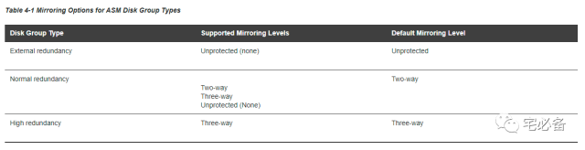
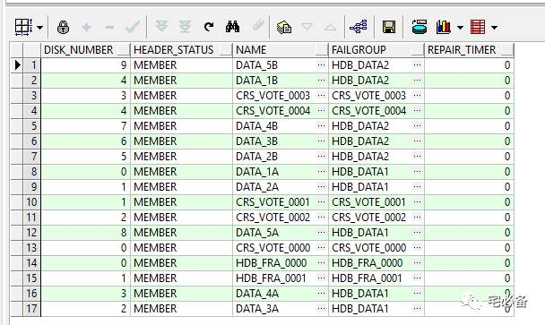
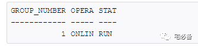

ASM镜像和磁盘组冗余
2017-10-31 Oracle 宅必备
上节讲了磁盘发现的内容，这节内容详细讲解写ASM镜像和故障组
1. ASM Mirroring
ASM可以为ASM 文件提供镜像服务，做法为将不同的文件区拷贝放在故障组中，这样可以保证文件副本不会存放在同个故障组中
ASM运行在数据库服务器上，Oracle 推荐使用在没有RAID保护的磁盘上，不过貌似企业应该两者都有的
该功能只能应用与Normal和High磁盘组中，各类型的磁盘组提供的镜像等级不同，具体如下

Normal至少需要2个故障组，High至少需要3个故障组
以Normal类型为例，如果超过2个故障组，只会有2份拷贝随机存放在其中的2个故障组中
2. ASM Failure Groups
故障组用来存放数据的拷贝，当ASM为一个文件分配了一个区(extent),ASM在不同的故障组同时写入主拷贝和次要拷贝，这样可以保证一个故障组的磁盘损坏不会影响数据的可用性
我们需要将同一硬件设备(存储,NAS)的磁盘放在一个故障组中以防止整个硬件故障导致数据不可用
如果我们在创建磁盘组时未指定故障组，默认会自动创建一个仅包含该磁盘的故障组
3. 使用故障组的一些指引
-
一个磁盘只可以属于一个故障组
-
故障组的大小应当保持一直，否则会大幅减少磁盘组大小的可用性
-
Normal至少需要2个故障组，High至少需要3个故障组
4. 故障组常见的问题
4.1 我们应当建多少个故障组
一般建议按照默认的建法不指定故障组，让ASM自动为每个磁盘创建一个故障组
但需要注意的是如果我们的磁盘属于多种不同的硬件设备(存储,NAS)，则需要将相同设备的磁盘放在同一个故障组，防止整个硬件故障导致数据丢失
4.2 关于磁盘连续故障
当磁盘组中的一块磁盘损坏后，ASM会进行重新同步以使其能够提供冗余服务，如果在这过程中，其他故障组的磁盘继续损坏，则会导致数据丢失，减轻方案见4.1的注意事项
5. DISK_REPAIR_TIME
当ASM 磁盘损坏或者不可用时，ASM会将其标记为offline状态，之后等待DISK_REPAIR_TIME 参数的时间，默认为3.6小时，如果磁盘修复完成，则可以将其online，如果没有则会自动将其从磁盘组中drop掉
该参数可修改，单位为分钟或小时
注意:当磁盘组没有mount时并不会计时
可以查看V$ASM_DISK视图的REPAIR_TIME栏位来确认
select disk_number,header_status,name,failgroup,repair_timer from v$asm_disk

如下举几个例子说明下:
磁盘处于offline状态 ，我们无法直接将其drop，需要再次将其offline然后drop
ALTER DISKGROUP D3 OFFLINE DISK D3_0001 DROP AFTER 0m;
将D3磁盘组的D3_0001磁盘OFFLINE
ALTER DISKGROUP D3 OFFLINE DISK D3_0001;
将D3磁盘组F2故障组的所有磁盘OFFLINE，在repair time后会drop掉
ALTER DISKGROUP D3 OFFLINE DISKS IN FAILGROUP F2;
将D3磁盘组的D3_0001磁盘ONLINE
ALTER DISKGROUP D3 ONLINE DISK D3_0001;
我们可以在命令后查看ASM的活动情况
SELECT GROUP_NUMBER, OPERATION, STATE FROM V$ASM_OPERATION;

6. 快速镜像同步(Fast Mirror Resync)
从Oracle 11g开始，ASM会记录下针对OFFLINE的磁盘在修复期间的操作，在其ONLINE后只是针对变更的数据在同步，而不用重建整个磁盘的数据,这样可以大幅提高同步速度
注意：该磁盘必须没有Drop掉